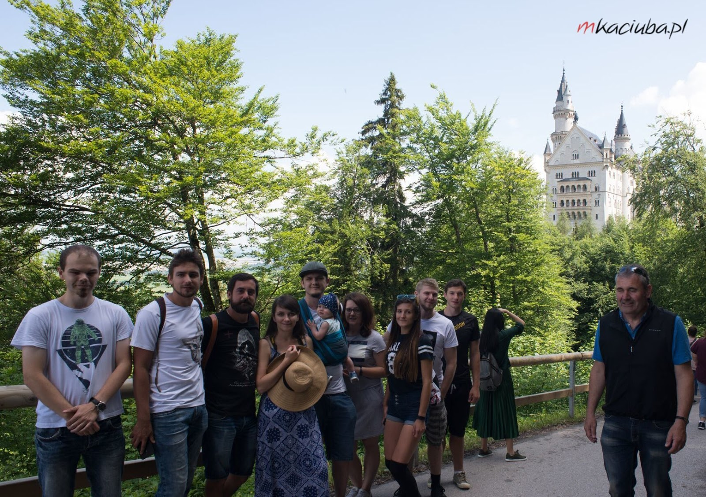
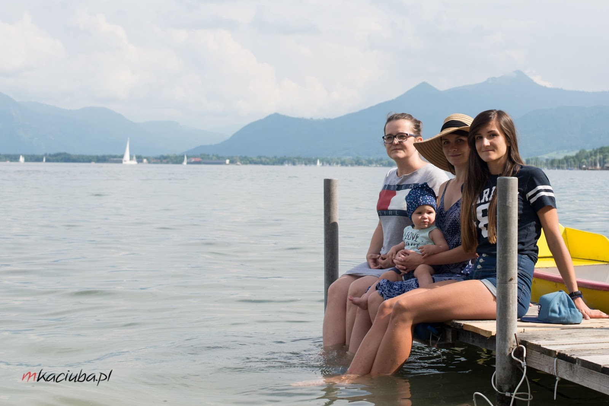
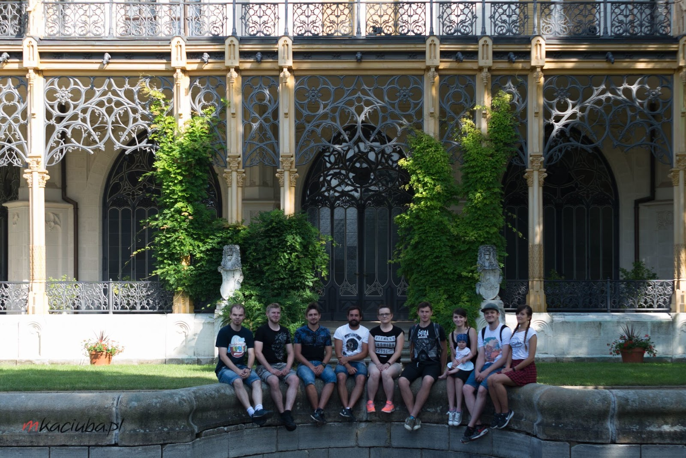
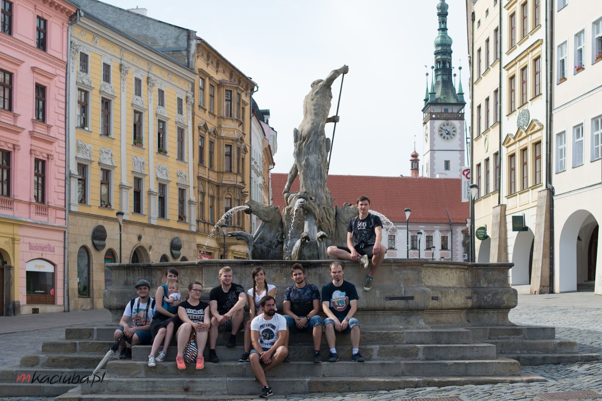

Plan wycieczki
Zwiedzone miejsca
- Koszyce
- Sighișoara
- Braszów
- Bukareszt
- skalne cerkwie w Iwanowie
- ruiny twierdzy Czerwen
- kamienny las
- Warna
- Nesebyr
- Burgas
- skansen w Etar
- komunistyczny monument w Buzłudży
- Płowdiw
- Sofia
- Nisz
- Belgrad
- Ökocentrum Tisza-Tavi
- Lillafüred
- Jaskinia Domica
- Dobszyńska Jaskinia Lodowa
Czas wycieczki: 10 dni
Skład osobowy: 6 osób i prawie dwu letni Bąbel
Przejechane kilometry: około 3500
Punkt początkowy i końcowy: Kraków
Noclegi, tradycyjnie, wyszukaliśmy po za dużymi miastami, co dało nam spore oszczędności. Dzięki temu znaleźliśmy też nocleg w Bjałej, który zaskoczył nas wysokim standardem i prywatną plażą - ale o tym później 😊
Plan wycieczki
Szczegóły planu
Dzień pierwszy
- 18:00 - wyjazd
- 22:00 - przyjazd do Koszyc, nocleg
Dzień drugi
- 8:00 - wyjazd
- 11:00 - przerwa w mieście Oradea
- 16:00 - przyjazd do miasta Sighișoara, zwiedzanie
- 20:00 - przyjazd do miasta Rupea, nocleg
Dzień trzeci
- 8:00 - wyjazd
- 9:00 - przyjazd do miasta Braszów, zwiedzanie do 11:00
- 14:00 - przyjazd do Bukaresztu, zwiedzanie do 19:00
- 20:00 - przyjazd do miasta Daia, nocleg
Dzień czwarty
- 8:00 - wyjazd
- 9:00 - przyjazd do miasta Iwanów, zwiedzanie skalnych cerkwi do 10:00
- 11:20 - przyjazd do miasta Czerwen, zwiedzanie ruin średniowiecznego miasta do 12:30
- 14:30 - przyjazd do kamiennego lasu, zwiedzanie do 15:30
- 16:00 - przyjazd do miasta Warna, zwiedzanie i plażing do 18:00
- 19:00 - przyjazd do miasta Bjała, nocleg
Dzień piąty
- 8:00 - wyjazd
- 9:00 - przyjazd do miasta Nesebyr, zwiedzanie do 11:30
- 12:30 - przyjazd do Burgas, zwiedzanie i plażing do wieczora, nocleg
Dzień szósty
- 8:00 - wyjazd
- 11:00 - przyjazd do skansenu w Etar, zwiedzanie do 13:00
- 14:00 - przyjazd pod pomnik na szczycie Buzłudży
- 17:00 - przyjazd do miasta Płowdiw, zwiedzanie, nocleg
Dzień siódmy
- 8:00 - wyjazd
- 10:00 - przyjazd do Sofii, zwiedzanie do 15:00
- 17:00 - przyjazd do miasta Nisz, zwiedzanie, nocleg
Dzień ósmy
- 8:00 - wyjazd
- 10:30 - przyjazd do Belgradu, zwiedzanie do 15:00
- 17:00 - przyjazd do miasta Palic, spacer nad jezioro, nocleg
Dzień dziewiąty
- 8:00 - wyjazd
- 11:00 - przyjazd do Ökocentrum w Tisza-Tavi, zwiedzanie do 15:00
- 16:00 - przyjazd do Miszkolca, zwiedzanie Lillafüred do 17:30
- 19:00 - przyjazd do miasta Hlavna, nocleg
Dzień dziesiąty
- 8:30 - wyjazd
- 9:00 - zwiedzanie jaskini Domica do 10:00
- 11:00 - przyjazd do Dobszyńskiej Jaskini Lodowej, zwiedzanie do 12:30
- 16:00 - powrót do Krakowa
Plan wycieczki
Trasa
Zwiedzanie
Koszyce
Docelowo mieliśmy tylko zatrzymać się tam na nocleg, ale po wjechaniu do centrum zobaczyliśmy katedrę św. Elżbiety (w której renowacji brała udział firma z Wrocławia), i to przesądziło o wieczornym i porannym spacerze po starym mieście. Uwielbiam takie miejsca, w których planujemy tylko zostać na noc, a finalnie okazuje się, że można tam zobaczyć coś ekstra.

Zwiedzanie
SIGHIȘOARA
Pierwsze ze średniowiecznych miast na naszej liście. Jeśli wybieracie się tak z dzieciakiem - wózek nie zda egzaminu. Miasto jest jednym z najlepiej zachowanych średniowiecznych kompleksów, jest tez wpisane na listę UNESCO. I co tu dużo mówić - warto je zobaczyć. Ciekawostką są schody, nad którymi rozciąga się drewniany dach. Został on wybudowany, aby zimą dzieci idące do szkoły mogły do niej dotrzeć bez problemów.

Zwiedzanie
BRASZÓW
Po drodze do Bukaresztu zatrzymaliśmy się na krótki spacer po Braszowie. Miasto wydawało się senne, ale może to przez wczesną godzinę przyjazdu 😊. Zresztą tego dnia idealnie wpasowaliśmy się w tą senną atmosferę, bo zwiedzanie zaczęliśmy kubkiem kawy. Można tu zobaczyć starówkę, stare mury oraz wyjechać kolejką na górę Tampa (na co się nie zdecydowaliśmy, żeby mieć więcej czasu w Bukareszcie).

Zwiedzanie
BUKARESZT
Długo można by pisać o tym mieście:obiad w starym zajeździe, zwiedzanie różnych budynków sakralnych (w tym dwa razy najpiękniejszej cerkwi 😉), drugi największy budynek na świecie, spacer rumuńskimi polami elizejskimi, wielkie rondo całe zabudowane fontannami i finalnie piwo w starym, zabytkowym browarze z niesamowitym klimatem i pysznymi papanasi. Podczas zamawiania warto zapytać, jak duża będzie porcja, ponieważ często po zamówieniu okazuje się, że jest podwójna.

Zwiedzanie
SKALNE CERKWIE
Nieopodal granicy zatrzymaliśmy się w Iwanowie, żeby zobaczyć wpisane na listę UNESCO skalne cerkwie. Jeśli też się tam wybieracie, koniecznie zaopatrzcie się w jakiś preparat na komary. Ścieżka, którą wskażą Wam na parkingu prowadzi do najlepiej zachowanej cerkwi. Trzeba zapłacić za wejście do środka a w zamian, oprócz zobaczenia wnętrza, poznacie też historię tego miejsca.

Zwiedzanie
RUINY TWIERDZY CZERWEN
Zwiedzanie skalnych cerkwi poszło nam trochę szybciej, niż myśleliśmy, więc po przejrzeniu przewodnika postanowiliśmy zobaczyć ruiny twierdzy Czerwen. Po pokonaniu schodów rozciągnął się przed nami pozostałości miasteczka. Charakterystyczne miejsca są dobrze opisane, i choć trzeba użyć nieco wyobraźni, warto się tu zatrzymać. Nie tylko dla samego miasteczka ale też dla widoków które otaczają ten skalisty cypel.

Zwiedzanie
KAMIENNY LAS I WARNA
Po drodze do Warny (w końcu nad morzem!) zatrzymaliśmy się jeszcze w kamiennym lesie, czyli zgrupowaniu kamiennych kolumn. Trzeba pamiętać, aby zostawiając samochód na parkingu, nie pozostawić na widoku żadnych cennych rzeczy. Po za skałami, których powstanie stanowi zagadkę, można tam zobaczyć świstaki, które co jakiś czas ciekawsko obserwowały nas zza kamieni. W Warnie, po wskoczeniu do morza, przespacerowaliśmy się Parkiem Nadmorskim. Udało się nam tam trafić na koncert bułgarskiej muzyki na żywo 😍.

Zwiedzanie
NESEBYR I BURGAS
Nesebyr to położony na półwyspie architektoniczny i archeologiczny rezerwat. Jeśli jesteście w okolicy i chcecie zobaczyć bardzo dobrze zachowane średniowieczne miasteczko - to koniecznie musicie tutaj przyjechać. Krążąc ciasnymi uliczkami wśród drewnianych domków można co chwilę odnaleźć, zachowane lepiej lub gorzej, zabytki. W Burgas zatrzymaliśmy się tylko na nocleg oraz popołudniowe wyjście na plażę.

Zwiedzanie
SKANSEN W ETAR
Skansen stworzony został na wzór małego miasteczka. Idąc główną ulicą, można nie tylko zobaczyć bułgarskie budynki z minionej epoki, ale też przyjrzeć się, jak dawniej wytwarzano na przykład biżuterię czy tkano dywany. W części budynków można spotkać rzemieślników a w części przewodników, którzy opowiadają historię oraz przeznaczenie danego budynku.
Zwiedzanie
BUZŁUDŻA
Na szczycie góry można znaleźć relikt komunizmu - stary, zniszczony i zapomniany pomnik. Wybudowany z rozmachem, teraz jest jedynie cieniem przeszłości - w tym momencie nie można nawet wejść do środka. Dotarcie tam nie jest trudne, ponieważ pod samo wejście prowadzi asfaltowa droga.
Zwiedzanie
PŁOWDIW
Początkowo planowaliśmy tylko nocleg w tym miejscu - ale na szczęście wybraliśmy się na wieczorny spacer. Stare miasto w Płowdiwie warto zobaczyć przede wszystkim z dwóch powodów: charakterystycznych, rozszerzających się ku górze domków i niesamowitego teatru antycznego. Nie spodziewaliśmy się, że będzie w takim dobrym stanie, a w połączeniu z hipodromem (gdzie można zejść i usiąść na starożytnych trybunach) tworzy unikalną parę.
Zwiedzanie
SOFIA
W Sofii od początku można zobaczyć, jak mieszają się kultury i religie. Podczas 10 minutowego spaceru minęliśmy synagogę, cerkiew, meczet i kościół katolicki. Można śmiało stwierdzić, że zwiedzanie tego miasta polegało głównie na turystyce sakralnej - ale biorąc pod uwagę ilość takich budynków, nie mogło być inaczej. Największe wrażenie zrobił na nas sobór św. Aleksandra Newskiego - trzeba obowiązkowo wejść do środka i poczuć klimat tego miejsca.
Zwiedzanie
NISZ
Przystanek na nocleg, ale byliśmy trochę wcześniej niż planowaliśmy, wiec pojechaliśmy pozwiedzać.Główną atrakcją tego miasta jest twierdza w centrum. Ale nas najbardziej ujęła gościnność miejscowych. Podczas poszukiwania parkomatu zapytaliśmy o pomoc w barze (można było zapłacić smsem - z lokalnego numeru, albo poszukać miejsca, w którym można zakupić bilet), właściciel wyszedł z nami, sprawdził, czy wszystko mamy schowane tak, aby nie kusiło złodziei, a finalnie zapłacił za nas za parking i stanowczo odmówił przyjęcia pieniędzy. Właścicielka domu, w którym się zatrzymaliśmy, powiedziała, że mamy szczęście bo akurat owocuje czereśnia, więc możemy się częstować ile dusza zapragnie. Wszędzie bez najmniejszego problemu dogadywaliśmy się po angielsku.
Zwiedzanie
BELGRAD
Miasto przywitało nas największymi korkami z całej podróży. Samochód zostawiliśmy na piętrowym, krytym (głównie ze względu na upał) parkingu Garage Obilićev venac. Ulicą Kneza Michaila dotarliśmy do Kalemegdanu. Przeszliśmy go wzdłuż i wszerz, ciesząc się głównie z tego, że dzięki drzewom mogliśmy schować się przed upałem 😉. Oprócz twierdzy wraz z murami obronnymi można tam zobaczyć wystawę sprzętu militarnego. Po zejściu do małego Kalemegdanu ulicą Tadeusza Kościuszki wróciliśmy na stare miasto. Tutaj zobaczyliśmy, między innymi, cerkiew katedralną św. Mikołaja, pałac patriarchy, konak księżnej Ljubicy i wiele innych. Ze względu na coraz większy upał zrezygnowaliśmy ze zwiedzania Nowego Sadu i pojechaliśmy prosto do Palić, gdzie mieliśmy zarezerwowany nocleg. Po przyjeździe, podczas spaceru nad jezioro okazało się, że stoi tam opuszczony parostatek, na który można wejść bez żadnego kłopotu 😍.
Zwiedzanie
ÖKOCENTRUM
Do zwiedzenia tego miejsca zachęcił nas opis, informujący, że jest to największy w Europie system akwariów słodkowodnych. Zaczęliśmy od rejsu po jeziorze Cisańskim, który gorąco polecamy - oprócz czapli białej i innego ptactwa wodnego, udało nam się również zobaczyć, jak jastrząb uczy swojego podlotka latać 😄. Następnie obeszliśmy wybiegi dla zwierząt wokół głównego budynku i wreszcie sam budynek. Warto sprawdzić każde piętro - na samym dole mieszczą się akwaria, przechodząc przez które można odnieść wrażenie, że zwiedzamy jezioro "od dołu". Jeśli będziecie na miejscu, koniecznie znajdźcie też czas, żeby zobaczyć karmienie wydr 😊
Zwiedzanie
LILLAFÜRED
Zgodnie z planem, chcieliśmy dojechać tam kolejką wąskotorową z Miszkolca, jednak dotarliśmy za późno i uciekł nam ostatni przejazd, więc pojechaliśmy prosto na miejsce. W Lillafüred jest wszystko, czego potrzeba do odpoczynku po tylu dniach zwiedzania: góry, las, wodospad, jezioro, piękny park z malowniczym hotelem oraz cisza i spokój 😄 Podczas spaceru po wiszących ogrodach udało się też zrobić zdjęcia chusty stworzonej przez SisHomemade.
Zwiedzanie
JASKINIA DOMICA I DOBSZYŃSKA JASKINIA LODOWA
Ostatni dzień spędziliśmy na zwiedzaniu jaskiń. Początkowo planowaliśmy zobaczyć tylko Domicę, ale spóźniliśmy się do niej kilka minut (wejścia są tylko o pełnych godzinach) i podczas godzinnego czekania na kolejne wejście przejrzeliśmy bardzo dokładnie wszystkie zdjęcia, wystawy i informacje - i tam też zobaczyliśmy Dobszyńską Jaskinię Lodową. Postanowiliśmy zmienić następny punkt wycieczki ze Ścieżki Koronami Drzew w Bachledowej Dolinie na tą jaskinię właśnie. Wracając do jaskini Domica, najdłuższej w Parku Narodowym Słowackiego Krasu - jest piękna. Nazwy poszczególnych formacji są trafnie dobrane i można je rozpoznać nawet bez pomocy przewodnika (który swoją drogą oprowadzał w bardzo ciekawy sposób). Żałowaliśmy tylko, że z powodu upałów nie było możliwości spływu łodzią po podziemnej rzece Styks. Dobszyńska jaskinia lodowa znajduje się tylko godzinę drogi dalej, w Słowackim Raju. Dodatkowo trasa mija bardzo szybko z powodu widoków, jakie rozpościerają się dookoła. Po zaparkowaniu czeka Was jeszcze 20 minut marszu, żeby dotrzeć do wejścia. Jaskinia robi duże wrażenie, zwłaszcza jeśli tak jak my zamienicie 35 stopniowy upał na prawie -4℃ 😉. Pierwszy raz w życiu zdarzyło nam się przechodzić przez lodowy tunel. Minusem jednak była ilość osób, które wchodzą jednocześnie do jaskini i taśmowe, mechaniczne oprowadzanie przez przewodnika.
Zdjęcia robił najlepszy fotograf - Marcin Kaciuba.